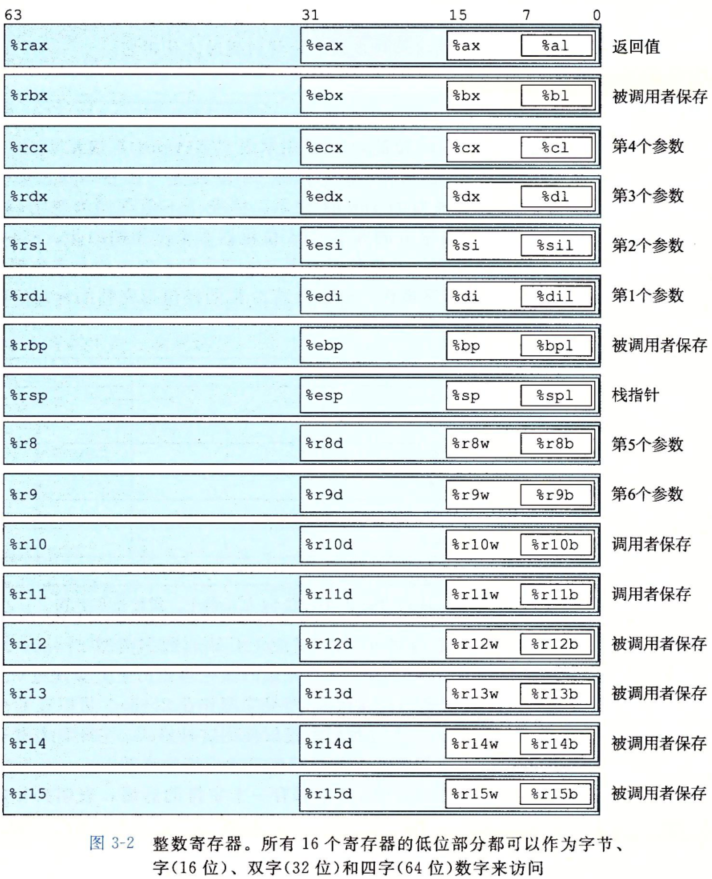

开此笔记，记录多次读却未读完的CSAPP将在这个3月底前读完，每天更新进度和笔记。
信息的表示与处理
信息存储
大多数计算机使用8位的块成为字节(byte),作为最小的可寻址内存单元。机器级程序将内存视为一个庞大的字节数组，成为虚拟内存(virtual memory),内存每个字节由唯一的数字来标识，成为地址，所有可能地址集合成为虚拟地址空间（virtual address space）。实际实现将众多存储设备和操作系统管理结合起来实现。
大端与小端表示
- 网络传输过程中要根据网络标准进行转换
- 机器代码表示
- 编写规避正常的类型系统的程序时(??)
位运算与逻辑运算
- 位运算：| 、&、~(非)、^（异或）
- 逻辑运算：||、&&、！
- 移位运算：<<(左移)、>>(右移)
- 算术右移：一般有符号数进行算数右移，即补最高有效位的值
- 逻辑右移：一般无符号数进行逻辑右移，即补0
整数运算
待更新……
浮点数
待更新……
程序的机器表示
程序编码
机器级编程的两种抽象：
- 指令集架构(ISA):定义了机器级程序的格式和行为，定义了处理器状态、指令的格式、以及每条指令对状态的影响。
- 机器级程序使用的内存地址是虚拟地址，提供的内存模型看上去是一个非常大的字节数组。
- X86-64虚拟地址采用64位，目前实现时地址高16位必须设置为0，所以实际能指定$2^{48}$或64TB范围*
Intel与AT&T语法区别：
操作数位置相反
In Intel-syntax:
在操作数中添加”=”
AT&T syntax:
. 在操作数中添加“→”
寄存器前加%，立即数前加$
操作后缀添加大小
b — byte (8 bits)
w — word (16 bits)
l — long (32 bits)
q — quad (64 bits)
地址描述方式AT&T采用(),Intel采用[],寻址方式也不同。
数据格式

访问信息

对于使用寄存器存入小于64位的时候：
- 如果使用1byte、2bytes，保持剩余高位不变
- 如果使用4bytes，剩余4bytes高位被置0(此条规则扩展到64位后添加)
操作数指示符
立即数(immediate)：用来表示常数值
寄存器(register):表示寄存器内容
内存引用：根据计算出的地址访问内存位置内容
最后一种模式为通用模式，其他模式为其特殊情况，即立即数+基址寄存器+(变址寄存器*比例因子)。
数据传送指令
MOV指令：
最后movabsq处理64位立即数，常规movq只能以表示为32位补码数字的立即数作为源操作数，然后将符号扩展得到64位的值，放入目的位置。movabsq能以任意64位立即数作为源操作数，并且只能以寄存器作为目的。
五种可能：
不存在内存到内存，如需要则要经过寄存器中转。
较小源值移动到较大目的时(寄存器/内存到寄存器)：

- 注意零扩展比符号扩展少了movzlq，因为已经规定了32位复制到64位时，高32位自动置为0。
- cltq相当于movslq，只是总以寄存器eax为源和rax为目的，不过编码更紧凑。